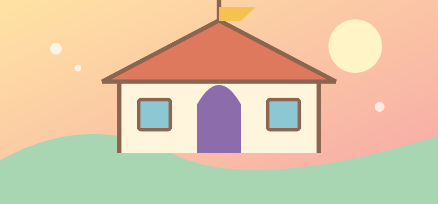

¿Cuánto sabés de nuestro lugar?
Curiosidades para jugar, compartir y descubrir historias reales del Chañar.
JUGAR TODO EL RECORRIDO →
🎲 JUGAR 5 PREGUNTAS
Podés jugar solo, en familia o por turnos. ¡Lo importante es descubrir!
1 Leé Una historia breve.
2 Elegí Verdadero o falso.
3 Descubrí Aprendé algo nuevo.
Sin reloj, sin apuro y sin respuestas que den vergüenza. Cada edad, a su ritmo.
También podés elegir un tema Entrá directo a lo que más te interesa.
🏛️ Los comienzos Fundación e instituciones · — 💧 Agua y chacras Producción y riego · — 🌾 La tierra Territorio e historias · — ☘️ Nuestra identidad Nombres y símbolos · —
Preparando las curiosidades...
🏅 Tu camino de descubrimientos Guardado solamente en este dispositivo.
0 PARTIDAS
0% MEJOR PRECISIÓN
0 ACIERTOS
🏵️ Tus insignias Se consiguen jugando.
Ver San Patricio del Chañar en imágenes
Fotografías: Municipalidad de San Patricio del Chañar · Conocé nuestra ciudad
Gratis · Sin registro · Para jugar en familia.
← INICIO
RECORRIDO COMPLETO
01 / 08
⭐ PUNTOS 0
🔥 RACHA 0
✓ ACIERTOS 0
Tu recorrido 0% completado
HISTORIA PARA EMPEZAR

🌿 ARCHIVO
¿VERDADERO O FALSO?
Preparando una historia...
Leé o escuchá. Después tocá una de las dos respuestas.
🔊 ESCUCHAR LA PREGUNTA
No hace falta saberlo todo. ¡Acá venimos a descubrir!
✓ VERDADERO ✕ FALSO
✓ ¡Correcto!
🔊 ESCUCHAR LA EXPLICACIÓN
SIGUIENTE PREGUNTA →
Tu respuesta quedó guardada en esta partida.
✳ ✦ ✳
¡Qué lindo descubrir!
0/8 RESPUESTAS
0 PUNTOS
0% PRECISIÓN
0 MEJOR RACHA
🏅 DESAFÍO COMPLETADO
Tus temas favoritos
Así te fue en cada tema de esta partida.
Repaso de tu partida
Volvé a mirar cada afirmación, su respuesta correcta y lo que aprendiste.
VOLVER A JUGAR LAS QUE ME COSTARON ↻
JUGAR DE NUEVO ↻
COMPARTIR MI RESULTADO ↗
La historia de nuestro lugar siempre tiene algo más para contar.
♡
SI TE GUSTÓ ESTA EXPERIENCIA
Ayudanos a seguir contando historias.
Este proyecto es de acceso libre. Si te resultó valioso y querés colaborar voluntariamente con Ocarina Producciones, podés hacerlo con un aporte, del tamaño que quieras.
Alias a nombre de Elías Martínez
ALIAS PARA DONATIVOS
ocarina.guitarra
COPIAR ALIAS ▣
Aporte voluntario · Muchas gracias ♡
 El río NeuquénBalneario Municipal
El río NeuquénBalneario Municipal
 La tierra que produceViñedos del Chañar
La tierra que produceViñedos del Chañar
 El trabajo de nuestra genteChacra Municipal
El trabajo de nuestra genteChacra Municipal